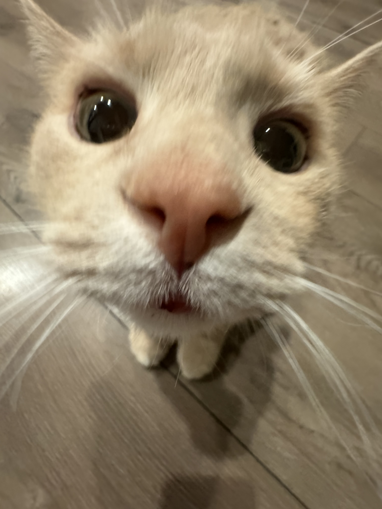

Who is Xiao Huang The Cat?
Overview

Xiao Huang, or Little Yellow in Chinese (he is not little), is a 10-year-old cat that is full of personality and quirks.
He will follow everyone around the house, shove his face into our dirty feet to mark his scent, and persistently paw us for food when we eat.
This would make you think that he just loves being around the family and that he is very affectionate, which is true,
Let's delve a little bit into the mind of Xiao Huang. There seems to be some sort of hierarchy to him in which he obeys.
| Person/th> | Rank |
|---|---|
| Mom | 1 |
| Dad | 2 |
| Me | ??? |
When my mom is around, he will only answer to her. When it is only me and my dad around, it is a 50/50. It is not confirmed, but it seems like the amount of treats we give him has an influence on this. Xiao Huang also seems to believe that everything in this house (possibly including even us) is his. He will lie down wherever, use everything he can find as a scratching post, and ensure that his fur is spread everywhere. Of course, everything is speculation, and no one can truly understand what is going on in that head of his.
Likes:
- Chin scratches
- Lickable cat treats and wet food
- Sun bathing
- Sitting on the handrest of the couch
- Sticking close to whoever is around
Dislikes:
- Empty food bowl
- When no one is downstairs
- Doorbells
- Sharing
- Being splashed with water